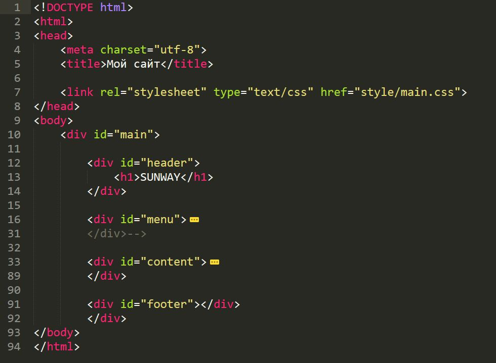
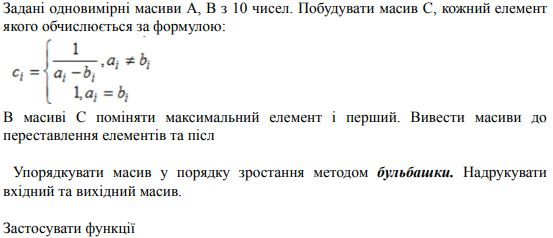

ЗВІТИ З ЛАБОРАТОРНИХ РОБІТ З ДИСЦИПЛІНИ
"РОЗРОБЛЕННЯ WEB-ЗАСТОСУВАННЬ
Студент групп ЗПІ-зп11 Запорожець Віталій
Опис предметного середовища
Туристи́чна інду́стрія це сукупність різних суб'єктів туристичної діяльності (готелі, туристичні комплекси, кемпінги, мотелі, пансіонати, підприємства харчування, транспорту, заклади культури, спорту тощо), які забезпечують прийом, обслуговування та перевезення туристів.
Тема:
Структура HTML-документа. Робота з посиланнями, таблицями, зображеннями, формами в HTML-документі.
Мета:
Придбати практичні навички роботи з HTML-документом, таблицями,формами, зображеннями, посиланнями. Створити шаблон звітного HTML-документом для відображення результатів роботи всіх лабораторних робіт та створити веб-сайт цікавих туристичних місць в Україні
Посилання на веб-сайт
Структура документа
HTML-код таблиць

HTML-код форми

HTML-код зображення

Висновки
В ході роботи я придбав практичні навички роботи з HTML-документом, таблицями,формами, зображеннями, посиланнями, а також створиои шаблон звітного HTML-документа.
Тема
Каскадні таблиці стилів. Селектори .Ідентифікатори. Стильове оформлення текстових елементів в HTML-документах.
Мета:
придбати практичні навички роботи з селекторами,ідентифікаторами, списками, різноманітними властивостями кольору і фону, зовнішними та внутрішними відступами, плаваючими елементами, оформленням текстових елементів
Посилання на веб-сайтСписки
HTML списки визначаються за допомогою тегів ul (невпорядкований / маркований список) або ol (упорядкований / нумерований список), з подальшими тегами li (пункти списку):

Ідентифікатори
Ідентифікатор (званий також « ID селектор ») визначає унікальне ім'я елемента, яке використовується для зміни його стилю і звернення до нього через скрипти. При описі ідентифікатора спочатку вказується символ решітки (#), потім йде ім'я ідентифікатора. Воно повинно починатися з латинської символу і може містити в собі символ дефіса (-) і підкреслення (_). Використання російських букв в іменах ідентифікатора неприпустимо. На відміну від класів ідентифікатори повинні бути унікальні, іншими словами, зустрічатися в коді документа лише один раз. Звернення до ідентифікатора відбувається аналогічно класам, але в якості ключового слова у тега використовується атрибут id, значенням якого виступає ім'я ідентифікатора (приклад 9.1). Символ решітки при цьому вже не вказується.

Відступи
Оскільки велика частина вмісту веб сторінки представлена \u200b\u200bу вигляді тексту, здатність стилізувати цей текст як привабливий, так і ефективний, це важливий навик, який може стати веб дизайнером. Для створення відступу опис і абзацу найбільш часто використовуваних і рекомендованих методом буде використання CSS. Тут будуть вам надані різні приклади того, як CSS можна використовувати для тексту і елемента відступу.Щоб створити верхні відступи використовується, то безумовно без CSS властивостей не обійтися, тому нам потрібно margin-top, це значення що можна по-різному ставити, як в px і стандартно на пікселях, em,% і так далі, що все відбувається в CSS стилістиці в одиницях вимірювання.

Плаваючи елементи
Плаваючими будемо називати такі елементи, які обтікаються по контуру іншими об'єктами веб-сторінки, наприклад текстом. Слід розуміти, що ніхто і ніде не плаває, тому правильніше говорити «обтічні елементи», але з іншого боку термін «плаваючий елемент» давно вже прижився, так що його використовуватимемо надалі.Плаваючі елементи досить активно застосовуються при верстці і переважно служать реалізації наступних завдань.
- Обтікання картинок текстом.
- Створення врізок.
- Розташування шарів по горизонталі (додавання колонок). Все це виконує одну стильову властивість float, а допомагають йому у цьому інші властивості. Хоча спочатку float не планувався на таку універсальну роль, але життєві реалії розставили все своїми місцями
Селектори
Селектори тегу і класу
Селектори тегу.Якщо потрібно змінити зовнішній вигляд вмісту, який міститься в будь-якому тезі, використовуйте CSS селектори тегів. Допустимо, вам потрібно змінити шрифт і колір усіх тегів h3, які є на веб-сторінці. Для цього вам знадобиться створити стиль, де селектором буде h3 (зверніть увагу: у CSS кутові дужки тега не записуються, а використовується тільки його ім'я):

Селектори класу.У HTML документі, селектори CSS класу знаходять елементи з потрібним класом. Атрибут класу визначається як розділений пробілами список елементів, і один з цих пунктів повинен відповідати імені класу, наведеному в селекторі.
Інші селектори
Звичайні селектори.При створенні дизайнів найчастіше застосовуються селектори типів і спадні селектори .
Селектор типу використовується для надання стилю всім елементам відповідного типу, наприклад гіперпосиланням, абзацам, заголовкам.
Для створення селекторів типу потрібно всього лише помістити в таблиці CSS ім'я елемента перед визначенням стилюПсевдокласи.У деяких випадках елементу потрібно присвоїти стиль не на основі структури документа, а за іншими ознаками, наприклад залежно від стану елемента форми або гіперпосилання. Це можна зробити за допомогою селектора псевдокласів.Директиви ":link" і ":visited" є псевдокласи гіперпосилань. Їх можна підключати тільки до гіперпосилань. Директиви ":hover", ":active" є динамічними псевдокласами. Теоретично їх можна підключати до будь-якого елементу. Але потрібно стежити за версіями браузерів, тому що від їх залежить коректність відображення інформації відформатованої даними селекторами. Універсальний селектор.Один з найбільш потужних і найменш популярних типів селекторів є універсальний селектор. Він служить як би метасимволом, що заміщає будь-який доступний елемент. Як і метасимвол в текстовому коді, універсальний селектор позначається символом зірочки "*". Зазвичай універсальний селектор застосовується для стилізації кожного елемента сторінки.Наприклад, за допомогою наступного правила можна скасувати вивід за замовчуванням зовнішніх і внутрішніх порожніх рамок для кожного елемента сторінки.
Додаткові селектори.Таблиці CSS підтримують багато інших корисних селекторів, крім розглянутих вище. Також потрібно сказати, що таблиці CSS розроблялися з урахуванням зворотної сумісності.Дочірні та суміжні селектори.Перший з додаткових селекторів - дочірній. Порівняйте: низхідний селектор присвоює стиль всім вкладеним елементам, а дочірній - тільки одному елементу, безпосередньо дочірньому. Дочірній селектор позначається символом ">". Наведений нижче стиль виводить напівжирним шрифтом тільки елементи першого рівня списку. На елементи вкладеного рівня списку стиль не впливає.
Групування селекторів
Групування селекторів CSS.Коли ви групуєте селектори CSS, ви застосовуєте однакові стилі до декількох різних елементів, не повторюючи стилів у вашій таблиці стилів. Замість того, щоб мати два, три або більше CSS-правила, всі вони виконують те саме (встановіть колір чогось червоного, наприклад), у вас є одне правило CSS, яке виконує те саме для вашої сторінки.Є кілька причин, чому групування селекторів приносить користь сторінці. По-перше, таблиця стилів менша і завантажується швидше. Справді, таблиці стилів не є одним з головних винуватців, коли справа стосується повільного завантаження сайтів. CSS-файли - це текстові файли, тому навіть дійсно довгі аркуші CSS є мініатюрними, розмірами файлів у порівнянні з неоптимізованими зображеннями. І все-таки кожна дрібниця підраховується, і якщо ви зможете поголити якийсь розмір свого CSS і завантажувати сторінки набагато швидше, це завжди добре.
Щоб групувати CSS-селектори на аркуші стилів, ви використовуєте коми для розділення кількох згрупованих селекторів у стилі. У цьому прикладі стиль впливає на елементи p та div: div, p {color: # f00; }
Кома означає "і", тому цей селектор застосовується до всіх елементів абзацу та всіх елементів поділу. Якщо кома відсутня, селектор замість цього застосовується до всіх елементів абзацу, які є дочірнім поділом. Це інший вид селектора, тому кома важлива.Висновки
В ході роботи я придбав практичні навички роботи з селекторами,ідентифікаторами, списками, різноманітними властивостями кольору і фону, зовнішними та внутрішними відступами, плаваючими елементами, оформленням текстових елементів.
Тема
Блочна верстка Html-документу за макетом. Верстка засобами CSS та FLEXBOX
Посилання на веб-сайтМета:
Придбати практичні навички роботи верстки сторінок засобами CSS, верстки на основі плаваючих елементів, з’ясувати переваги та недоліки типів макетів веб-сторінок.Придбати практичні навички роботи верстки сторінок засобами CSS та FLEXBOX
Зовнішній вигляд макету

HTML-код макету

Розмітка сторінки а допомогою таблиці
Посилання на веб-сайтРозмітка сторінки а допомогою плаваючих блоків
Посилання на веб-сайтТехнологія FLEXBOX.
Посилання на веб-сайтHTML-код сторінки завдання

СSS-код сторінки завдання

Висновки
В ході роботи я придбав практичні навички роботи верстки сторінок засобами CSS, верстки на основі плаваючих елементів, з’ясувати переваги та недоліки типів макетів веб-сторінок.Придбати практичні навички роботи верстки сторінок засобами CSS та FLEXBOX
Тема
Функціональне застосування JAVASCRIPT у HTML-документі.Класи.Об’єкти. Функції, в мові JAVASCRIPT. Події та обробка подій.Програмна взаємодія з HTML документами на основі DOM АРІ
Постановка задачі
1.У власному сайті або на окремій WEB-сторінці, використовучі функції , застосувати 4 способи функціонального застосування JavaScript:гіпертекстове посилання (схема URL);обробник події (handler);вставка (тег SCRIPT).
Посилання на веб-сайт
2.Розмістити результати виконання та програмний код 2 пункту у звітному HTML-документі, записавши назви файлів HTML-документів.
3.Використовуючі сценарій на JavaScript, виконати завдання. яке приведене у Таблиці №1.
Завдання:задані одновимірні масиви А, В з 10 чисел. Побудувати масив С, кожний елемент якого обчислюється за формулою:

В масиві С поміняти максимальний елемент і перший. Вивести масиви до переставлення елементів та після
Упорядкувати масив у порядку зростання методом бульбашки. Надрукувати вхідний та вихідний масив.
Застосувати функції.
5.Забезпечити виконання завдання згідно із варіантом (Таблиця №2), сформувати необхідні дані, вбудовані у програму, у вигляді масивів, виконати тестування програми.
Текстовий редактор
Реалізувати редактор, який би дозволяв виконувати форматування тексту, який уводиться. Обов‘язкові елементи форматування: напівжирність, нахил, підкреслювання, колір тексту, регістр символів. Елементи форматування мають бути доступними через відповідні кнопки, форматований текст – у окремому вікні на сторінці.
Способи функціонального застосування JavaSript
Функціональне програмування (ФП) – це процес створення програмного забезпечення використовуючи чисті функції (pure functions), уникаючи загального стану (shared state), змінюваних даних (mutable data), а також побічних ефектів (side-effects). Функціональне програмування – це парадигма програмування, а це означає, що це спосіб спосіб мислення в процесі створення програмного забезпечення на основі деяких фундаментальних принципів (перераховані вище). Основна ідея ФП наступна – використовуй змінюваний стан, тільки тоді, коли це дійсно необхідно.
Основні терміни:функції вищих порядків (Higher-order Functions);функції першого класу (First-Class Functions); чисті функції (pure functions);побічний ефект функції (side-effects);незмінний стан (immutable state);Shared State;замикання (closure);рекурсія;часткове застосування функції (Partial function);функтор;монада.
Схема URL

Обробник подійL

Підстановка (entiry)
Подстановки (entity) поддерживаются только браузером Netscape Navigator 4.0
Подстановки имеют формат: &{код_программы}; и используются в качестве значений атрибутов HTML-контейнеров.
Приклад:
Вставка (тег SCRIPT)

Масиви
Посилання на веб-сайт
Виконання 6 пункту
Посилання на веб-сайт
Висновки
В ході роботи я придбав придбати практичні навички роботи маніпулювання інформаційним вмістом Web-документа засобами мови JavasSript, використання об’єктів,масивів, функцій, подій, обробників подій у сценаріях на мові JavasSript
Тема
Використання в сценаріях JAVASCRIPT бібліотек крос-браузерних інтерфейсів методів DOM. бібліотека JQUERY цi засоби налагодження і тестування сценаріїв JAVASCRIPT.
Постановка задачі
1.Користуючись документацією бібліотеки https://jqueryui.com/ додати до сайту (або до окремої сторінки) 2-3 динамічних елементи, що наведені в переліку:Accordion - набір елементів, що розгортаються/згортаються.Datepicker - вибір дати з календаря.Menu – випадне меню.Slider - вибір числа за допомогою повзунка.Tabs - організація вкладок на сторінці.Tooltip - організація спливаючих підказок.
2.Додати до сайту (або до окремої сторінки) плагін галереї UniteGallery. Створити за допомогою бібліотеки:фотогалерею з можливістю перегляду збільшених зображень,слайдер фотографій,слайдер відеоматеріалів.
3.Додати до сайту (або до окремої сторінки) кнопки соціальних мереж: Facebook, Twitter, Instagram, Pinterest.
4.одати сайту (або до окремої на сторінці) інформери:погода у Києві ( або у іншому місці),курс валют,годинник.
5.Додати сайту (або до окремої на сторінці) один (або більше) із модулів jQuery для мультимедіа (зображення і відео). Список модулів дивитись в теоретичних відомостях .
Динамічні елементи 3 пункту
Посилання на веб-сайт
Фотогалерея
Слайдер фотографій
Посилання на веб-сайт
Кнопки соціальних мереж

Інформери


Висновки
В ході роботи я придбав практичні навички роботи jQuery UI, вміти додавати до сайту динамічні елементи цієї бібіліотеки, плагін галереї UniteGallery, кнопки соціальних мереж, інформери та інше.
Тема
WEB-сервери та принципи їх роботи з користувачем.Серверні WEB-застосування.
Постановка задачі
1.Користуючись документацією бібліотеки https://jqueryui.com/ додати до сайту 3 динамічних елементи на свій розсуд.
2.Вибрати емулятор WEB-сервера за власним бажанням.Створити WEB-вузол на комп’ютер.
3.На WEB-вузол завантажити всі HTML-документі. Звернулись до них з запитом для перегляду.
4.Перейменувати розширення .html на .php . Відкрити і з’ясувати, що інформація відображується на екрані.
5.Ознайомитись с установкой и конфигурированием WEB-сервера.
6.Визначити для файлів вузла для файлов узла кодировку utf-8 у самих файлах (meta - charset), в httpd.conf (apache), php.ini.
7.Перевірити корректність відображення інформації.
8.Для форми зворотнього зв’язку відобразити ( на відправку повідомлення) інформацію, что повідомлення отримано. Також відобразити дату.
Налаштування


Висновки
В ході роботи я придбав практичні навички встановлення та конфігурування WEB-сервера, встановлення та налаштування Apache
Тема
Взаємодія WEB-застосувань з системою керування базами даних (СКБД). обробка результатів SQL-запитів у PHP-сценарії
Постановка задачі
1.Завантажити ПК «Денвер» або «Open Server» або той програмний комплекс, який був встановлений на попередній лабораторній роботі.
2. Відповідно до варіанту індивідуального завдання Таблиці №1, (фільмотека) потрібно:
a. визначити класи об’єктів предметної області, дані які будуть зберігатися у БД;
b. створити інфологічну модель;
c. нормалізувати реляційну базу та перейти до датологічної моделі;
3.Для прискорення та полегшення розробки інфологічної моделі , яка містить таблиці і зв’яки між ними, рекомендовано встановити програму MySQL Workbench.
4.Реалізувати БД в СУБД MySQL використовуючи веб-інтерфейс для роботи із сервером MySQL phpMyAdmin.
5.Написати скрипти на PHP для внесення даних до БД, виведення даних на екран та для пошуку даних в БД.
Завантажити программний комплекс
Відповідно до варіанту
-визначити класи об єктів предметної області, дані які будуть зберігатися у БД
-нормаліувати реляціїну базу та перейти до датологічної моделі
Скрипт на РНР для внесення данних до БД, виведення данних на екран та для пощуку данних в БД
Висновки
В ході роботи я придбав практичні навички підключення до СКБД, вибора бази даних, виконання запиту, отримання результатів, відключення від СКБД
Тема
Інтерфейси взаємодії WEB-застосувань з системою керування баз даних (СКБД). SQL-запити у PHP-сценаріях. інтерфейси WEB-застосувань з СКБД. використання сесій і COOKIES в сценаріях авторизації. розробка сценаріїв обробки даних з файлів.
Постановка задачі
1.Розробити остаточну структуру бази даних вашого власного сайту.
2.Завантажити ПК «Денвер» або «Open Server» або той програмний комплекс, який був встановлений на попередніх лабораторних роботах.
3.Створити повну інфологічну модель БД вашого власного сайту. Зробити опис цієї моделі: класифікацію сутностей, атрибутів, обмеження цілостності.
4.Побудувати повну датологічну модель вашого власного сайту. Описати всі зв’зки цієї моделі. Виконати нормалізацію БД вашого власного сайту (третя нормальна форма).
5.Реалізувати БД в СУБД MySQL використовуючи веб-інтерфейс для роботи із сервером MySQL phpMyAdmin.
6.Написати скрипти на PHP для внесення даних до БД, виведення даних на екран та для пошуку даних в БД вашого власного сайту.
7.Створити SQL-запити до БД, які будуть відображувати повний функціонал роботи вашого власного сайту.
8.Результати виконання запитів ( взяти на свій розсуд) записати у текстовий файл.
9.Виконати авторизацію.На головній сторінці створити форму з такими елементами: логін та пароль ( при необхідності можна добавити інші елементи).
10.Реалізувати прийом даних цієї форми та відображення переданої інформації.
11.Записати усі передані дані у сесію. Реалізувати заповнення значень форми на головній сторінці значеннями, які зберігаються у формі. Тобто, щоб при переході на головну сторінку елементи форми заповнилися тими значеннями, які збережені у сесії.
12.На головній сторінці додати іконки для вибору мови:(кількість мов взяти на свій розсуд, але не менше трьох).
13.Кожну іконку обернути у посилання вигляду: index.php?lang=ukr і реалізуйте у файлі index.php обробник GET-запиту з вибраною мовою.( або надати свій варіант) Вибрану мову записати у кукі-змінну з часом життя півроку і при відображенні файла index.php реалізувати читання кукі-змінної і виведення фрази вигляду:Вибрана мова: Українська (або англійська, або російська).М
Висновки
В ході роботи я придбав практичні навички роботи взаємодії WEB- застосувань з СКБД, використання сесій і cookies в сценаріях авторизації, розробки сценаріїв обробки даних з файлів.
Тема
Асинхронна взаємодія клієнтської і серверної частин WEB- застосувань з використанням технології AJAX. формування AJAX-запиту засобами JQUERY.
Постановка задачі
1.Виконати асинхронну взаємодію клієнтської і серверної частин WEB- застосування за допомогою технології AJAX.
Завдання:Ajaxредактор текстових файлів
Надати можливість створення та редагування умовних текстових файлів з сервера. Передбачити виведення списку вже існуючих файлів. Файли зберігати на сервері всередині XML-документа. Реалізувати функції перегляду, запису та вилучення файлів. Операції пересилання даних виконувати асинхронно.
Сфоормувати Аjax-запит засобами jQuery.
2.Продемонструвати програмний інтерфейс обробки клієнтських запитів-команд на серверній стороні.
3.Результат виконання даного запиту розмістити у звітному HTML-документі та записати у текстовий файл.
4.У власний сайт добавити 3 нових запита, з використанням технології AJAX.
5.Результат роботи запитів відобразити у звітному документі і записати у текстовий файл.
6.Продемонструвати повний функціонал вашого власного сайту.Для цього:
⎯ розписати по пунктам, що виконує програма у дев’ятій лабораторній роботі (прямо написати список дій (запитів), які виконуються у вашій програмі), починаючи з авторизації.
⎯ Порівняти з пунктами загальної постановки задачі (ПЗ), яку прописували у першій лабораторній роботі та пунктами ПЗ – девятої лабораторної роботи.
⎯ Написати що зроблено, що не зроблено, що добавлено у програмі.
Висновки
В ході роботи я придбав практичні навички роботи основ асинхронного обміну даними мовою JavaScript за допомогою технології Ajax та бібліотеки Jquery, формування Аjax-запиту засобами jQuery при реалізації практичних задач Web-програмування.